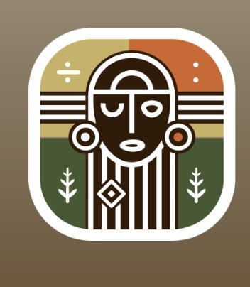
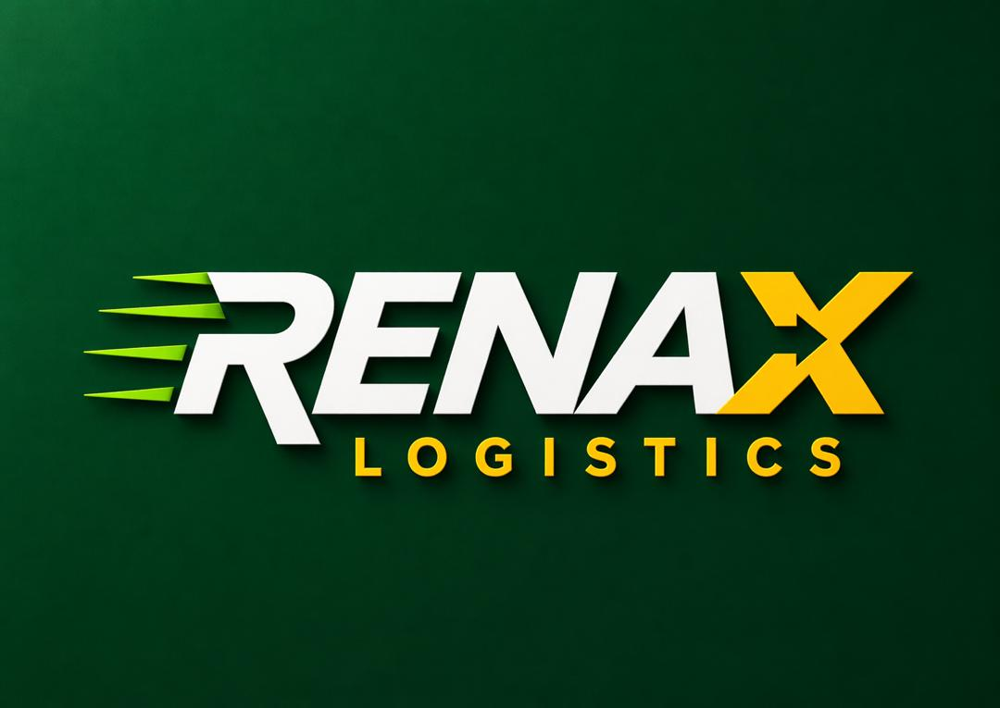
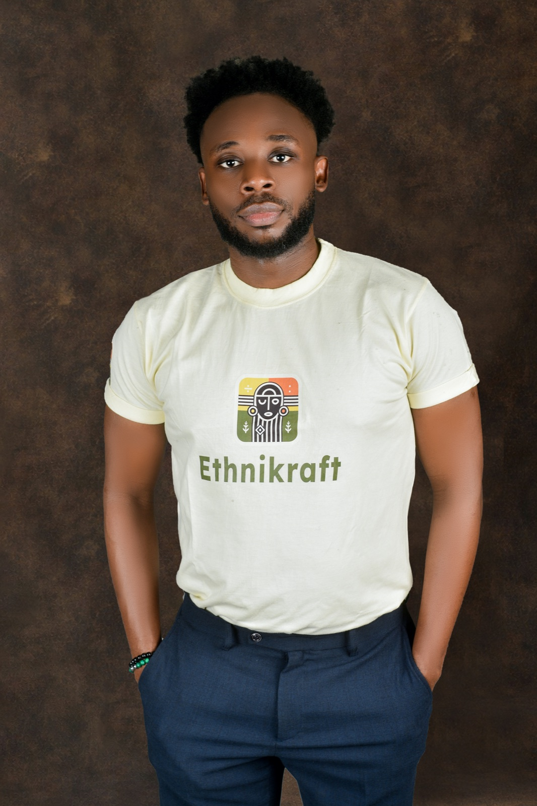
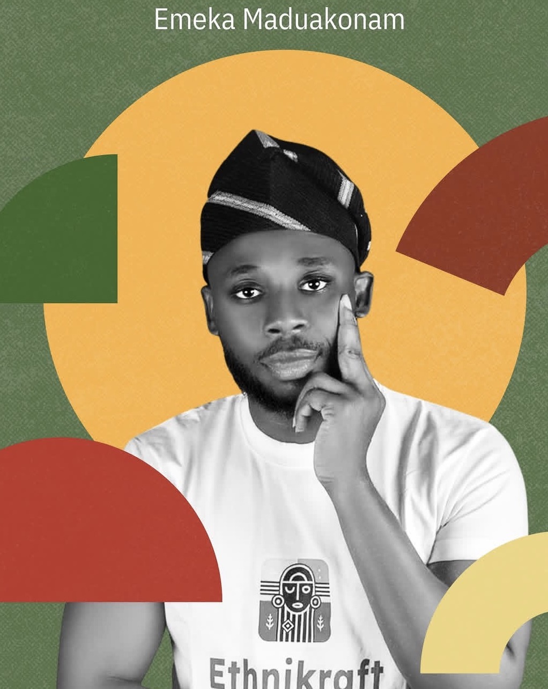

Products with context
Ethnikraft's catalog can do more than list items. It can tell buyers where a piece belongs, how it was made, how it should be styled, and why the maker's detail matters.
Grey Wolf . CEO . Product Design & Architect
A 35-year-old Nigerian CEO, Product Design & Architect shaping systems where culture, commerce, logistics, and software meet with uncommon clarity.

Ethnikraft Afrika
RENAX Logistics SuiteEthnikraft Afrika
Design, systems, and product strategy
University of the West of Scotland (UWS)
Profile
Emeka Maduakonam brings together executive judgment, technical fluency, product design instinct, and a deep belief in African creative enterprise. He studied Computer Science at the University of Benin, is currently pursuing his MSc in Information Technology with Data Analytics at the University of the West of Scotland (UWS), and approaches technology as a practical instrument: something that should make trade easier, stories clearer, systems calmer, and teams more capable.
His work sits at a compelling intersection. As CEO and Co-founder of Ethnikraft Afrika, he carries the responsibility of brand direction, cultural commerce, and market trust. As a Product Design & Architect and collaborator, he helps shape software ideas across logistics and learning with an eye for operations, user trust, interface clarity, and product coherence.


Ethnikraft Afrika
As CEO and Co-founder, Emeka is shaping Ethnikraft Afrika as a marketplace with memory. It gives made-in-Africa products a cleaner commercial stage across wears, shoes, bags, accessories, African crafts, paintings, antiques, and custom requests, while preserving the story, pride, and handwork behind each piece.
The brand's strongest idea is that culture should not be presented as a side category. It should feel premium, searchable, trustworthy, and globally fluent. Ethnikraft can become the kind of platform where a buyer finds a jacket, a sculptural object, a painting, or a custom commission and immediately understands its craft value.
Ethnikraft's catalog can do more than list items. It can tell buyers where a piece belongs, how it was made, how it should be styled, and why the maker's detail matters.
The platform creates room for artisans, designers, and sellers to join a wider digital market without losing the character of their own work.
Custom requests can become a premium experience: clear briefs, better expectations, maker communication, payment confidence, and delivery accountability.
The business opportunity is in combining culture with modern product discipline: authentication cues, buyer support, vendor quality, and consistent service.
Selected Collaborations
Emeka is featured here as a collaborator across product ideas that require both technical understanding and business realism: logistics networks, field execution, customer trust, and learning access.
RENAX Suite
RENAX has the shape of a serious logistics platform because every side of the experience answers a different operational question. Customers need confidence before, during, and after a shipment. Riders need a fast field tool that keeps assignments, location, proof, and delivery actions clean. Admin teams need command-level visibility so dispatch decisions are based on live movement instead of guesswork.
The suite is powerful because it treats logistics as a chain of trust: book the shipment, price the movement, assign the rider, track the route, verify the handoff, resolve exceptions, and learn from every completed delivery.
The customer side is built around clarity. It supports shipment booking, agro transport requests, wallet payments, notifications, support flows, and real-time tracking. A strong customer app does not simply collect orders; it reassures people that the movement of their goods is visible, priced, and accountable from pickup to destination.
Open repositoryThe rider side turns assigned work into verified movement. It covers job acceptance, live location publishing, terminal tasks, route updates, and delivery proof through OTP, QR, photo, and signature capture. It gives the field team a direct way to show progress without slowing down the delivery itself.
Open repositoryThe admin side is where the network becomes manageable. It brings shipment oversight, rider visibility, terminal pressure, alerts, finance views, analytics, and relay performance into one surface. This is the part of RENAX that helps operators spot delays early, balance rider load, and turn delivery history into better planning.
Open repositoryCustomers enter shipment details, choose the right logistics path, and receive clear cost and status expectations.
Admins match shipments to available riders, terminal flows, or relay points using visibility from the command center.
Riders execute pickup, transit, terminal actions, and last-mile delivery while the system records progress.
Proof capture, delivery confirmation, and exception notes close the loop with accountability on every handoff.
Collaboration Value
It needs a practical reading of trust, movement, accountability, and business operations. A collaborator on this kind of suite has to think about how a customer feels when a parcel leaves their hand, how a rider works under pressure, and how an admin team makes decisions when several deliveries are moving at once.
A learning-platform collaboration built with a focused Next.js foundation and a private learner entry experience. The product reads as a disciplined education workspace: clear authentication, branded learner continuity, and room for structured modules, progress, and support to mature around a serious learning journey.
Ethnikraft's product world calls for more than beautiful inventory. It needs catalog logic, vendor trust, buyer confidence, custom order pathways, and storytelling strong enough to make African-made collections feel collectible, current, and internationally legible.
Journey
A technical base that informs how Emeka thinks about systems, interfaces, architecture, and the practical realities behind digital products.
A founder role centered on African commerce, maker visibility, customer trust, and the opportunity to give cultural products a stronger digital economy.
Pursuing a Master of Science in Information Technology with Data Analytics at the University of the West of Scotland (UWS), equipping him with advanced analytical skills to leverage data for product optimization and digital growth.
Contact
Emeka's portfolio is built around that conviction: software should not flatten identity, and heritage should not be kept outside modern product strategy. The next chapter is sharper platforms, stronger collaborations, and African-built experiences with global confidence.